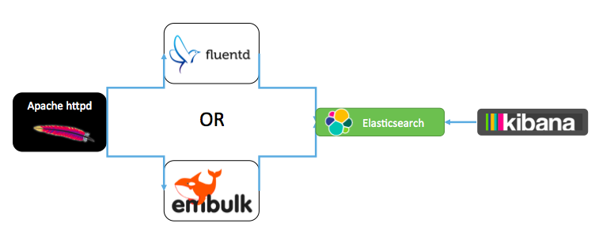
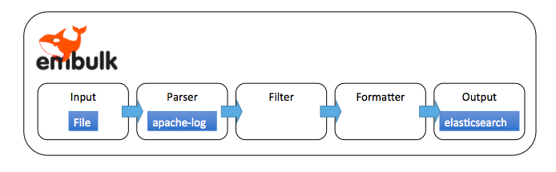

<!DOCTYPE html>
<html lang="ja">
<head>
<meta charset="utf-8">
<meta name="viewport" content="width=device-width, initial-scale=1">
<link href="http://fonts.googleapis.com/css?family=PT+Sans:400,700" rel="stylesheet" type="text/css">
<link rel="stylesheet" href="http://cdnjs.cloudflare.com/ajax/libs/highlight.js/8.4/styles/github.min.css">
<link rel="stylesheet" href="/DevelopersBacking/css/normalize.css">
<link rel="stylesheet" href="/DevelopersBacking/css/skeleton.css">
<link rel="stylesheet" href="/DevelopersBacking/css/custom.css">
<link rel="alternate" href="/DevelopersBacking/index.xml" type="application/rss+xml" title="Netcom Developer&#39;s Backing">
<title>Netcom Developer&#39;s Backing #7のまとめ - Netcom Developer&#39;s Backing</title>
</head>
<body>

<div class="container">

	<header role="banner">
		<div class="header-logo">
			<a href="/DevelopersBacking/"></a>
		</div>
		
	</header>


	<main role="main">
		<article itemscope itemtype="http://schema.org/BlogPosting">
			<h1 class="entry-title" itemprop="headline">Netcom Developer&#39;s Backing #7のまとめ</h1>
			<span class="entry-meta"><time itemprop="datePublished" datetime="2015-10-26">October 26, 2015</time></span>
			<section itemprop="entry-text">
				

<p>10/16（金）にNetcom Developer&rsquo;s Backing #7を行いました。</p>

<h1 id="analyze-access-log-with-elasticsearch-kibana-石川さん:3910319bb7460ea77f3a203b24e5aefb">Analyze Access Log with Elasticsearch + Kibana：石川さん</h1>

<ul>
<li>webサーバーのアクセスログ、ただ退避してローテーションで消えていっていませんか?</li>
<li>障害調査/アクセス解析/転送量解析など様々な用途に利用できる貴重な商用ファクト<br />
<strong>-&gt; 大事な資産を有効活用しよう！</strong></li>
</ul>

<h2 id="アクセスログ調査あるある:3910319bb7460ea77f3a203b24e5aefb">アクセスログ調査あるある</h2>

<ul>
<li>トップページアクセスのクエリパラメータのTOP10が知りた～い</li>
<li>あ、やっぱりトップページじゃなくて/hogeのでお願い。</li>
<li>あと2つ追加で～～～～
-&gt; 毎回、アクセスログにgrepかけて出力とかやってられない！
</li>
</ul>

<h2 id="ツールを使う:3910319bb7460ea77f3a203b24e5aefb">ツールを使う</h2>

<ul>
<li>Webalizer<br />
-&gt; そんなのもありましたねぇ・・・</li>
<li>ApacheLogViewer<br />
-&gt; いまいち使いづらい</li>
<li>Hadoop, Hive, Spark<br />
-&gt; 環境を用意するのが大変。要件として最初から存在するならアリかな。</li>
<li><strong>Elasticsearch + Kibana</strong><br />
-&gt; Hadoopよりは構築が簡単。Kibanaカッコイイ・・・<br />
流行ってる(バズってる）</li>
<li>InfluxDB ＋ Grafana<br />
-&gt; 時系列DBのInfluxDBにため込むパターン<br />
GrafanaはGraphiteやInfluxDB向け可視化ツール</li>
</ul>

<h2 id="今回やりたかったこと:3910319bb7460ea77f3a203b24e5aefb">今回やりたかったこと</h2>

<p>某予約サイトアクセスログ調査</p>

<h3 id="性能観点:3910319bb7460ea77f3a203b24e5aefb">性能観点</h3>

<ul>
<li>どのタイミングで負荷があがっているのか</li>
<li>エラー(sc &gt;= 400)となっているリクエストがどれくらいあるのか</li>
<li>TPSの計算</li>
<li>転送量の推計</li>
<li>重い(遅い)ページはどこか</li>
</ul>

<h3 id="業務観点:3910319bb7460ea77f3a203b24e5aefb">業務観点</h3>

<ul>
<li>アクセスの多い店舗はどこか</li>
<li>ユーザーエージェントの比率</li>
<li>リファラTOP100</li>
</ul>

<h4 id="特に性能に関しては可視化することによって問題点がわかりやすくなる:3910319bb7460ea77f3a203b24e5aefb">特に性能に関しては可視化することによって問題点がわかりやすくなる。</h4>

<p>-&gt; 可視化可能なツールでやろう。</p>

<h2 id="elasticsearch-kibana:3910319bb7460ea77f3a203b24e5aefb">Elasticsearch + Kibana</h2>

<ul>
<li>最近流行りのログ可視化パターン。</li>
<li>全文検索エンジンのElasticsearchに可視化ツールであるKibanaを組み合わせる。</li>
<li>カッコイイ</li>
<li>プロトタイプで導入実績あり<br />
Apache-log(LTSV) -&gt; fluentd -&gt; Elasitcserach</li>
</ul>

<h2 id="やりたいこと:3910319bb7460ea77f3a203b24e5aefb">やりたいこと</h2>

<p></p>

<h2 id="elasitcserach:3910319bb7460ea77f3a203b24e5aefb">Elasitcserach</h2>

<ul>
<li>全文検索エンジン</li>
<li>Apache LuceneのRESTインターフェースみたいなもの</li>
<li>Kuromoji等の日本語形態素アナライザも入れられる</li>
<li>Javaさえあれば動く。</li>
<li>複数台のサーバーでクラスタリングが可能</li>
<li>スキーマレス</li>
</ul>

<pre><code>$ curl https://download.elastic.co/elasticsearch/elasticsearch/elasticsearch-1.7.2.tar.gz
$ tar zxvf elasticsearch-1.7.2.tar.gz
$ cd elasticsearch-1.7.2
$ ./bin/elasticsearch
</code></pre>

<h2 id="kibana-4:3910319bb7460ea77f3a203b24e5aefb">Kibana(4)</h2>

<ul>
<li>Elasticsearch用可視化ツール</li>
<li>GUIからElasticsearchに投げる集計クエリを構築、結果をグラフ化してくれる。</li>
<li>Kibana4からNodejs製に</li>
</ul>

<pre><code>$ curl https://download.elastic.co/kibana/kibana/kibana-4.1.2-linux-x64.tar.gz
$ tar zxvf kibana-4.1.2-linux-x64.tar.gz
$ cd kibana-4.1.2
$ vi config/kibana.yml # fix elasticsearch_url
$ ./bin/kibana
</code></pre>

<h3 id="データのロード:3910319bb7460ea77f3a203b24e5aefb">データのロード</h3>

<h4 id="リアルタイムでのロード:3910319bb7460ea77f3a203b24e5aefb">リアルタイムでのロード</h4>

<ul>
<li>fluentd

<ul>
<li>ログコレクタのデファクトスタンダード</li>
<li>tail-pluginを使ってaccess_logをtail</li>
<li>ログフォーマットを変更できる場合はltsvで出力するのがおすすめ</li>
</ul></li>
</ul>

<h4 id="バルクロード:3910319bb7460ea77f3a203b24e5aefb">バルクロード</h4>

<ul>
<li>embulk

<ul>
<li>去年ぐらいに出てきたバルクローダ</li>
<li>任意のInputから任意のOutputへバルクロードできる。</li>
<li>fluentdと同じ、TresureData製。<br />
<strong>-&gt; 環境の制約等で今回はこちらを利用</strong></li>
</ul></li>
</ul>

<h2 id="embulkを使ったapacheアクセスログのロード:3910319bb7460ea77f3a203b24e5aefb">embulkを使ったApacheアクセスログのロード</h2>

<p></p>

<ul>
<li>Input: ローカルファイル読み込みプラグイン</li>
<li>Parser: Apacheログをパース</li>
<li>Output: Elasticsearchへバルクロード</li>
</ul>

<h2 id="parserについて:3910319bb7460ea77f3a203b24e5aefb">Parserについて</h2>

<h3 id="embulk-parser-apache-log:3910319bb7460ea77f3a203b24e5aefb">embulk-parser-apache-log</h3>

<ul>
<li>Apacheのアクセスログを1行ずつパースするパーサプラグイン</li>
<li>combinedもしくはextendログをパースすることができる。</li>
</ul>

<pre><code>%v %{X-Forwarded-For}i %l %u %t \&quot;%m %U%q %H\&quot; %&gt;s %b \&quot;%{Referer}i\&quot; \&quot;%{User-Agent}i\&quot; %I %O %D
</code></pre>

<h4 id="しかし今回出力されるログはカスタムログ形式:3910319bb7460ea77f3a203b24e5aefb">しかし今回出力されるログはカスタムログ形式・・・</h4>

<p>-&gt; 既存のパーサでは対応できない！！！<br />
   ないものは作る！</p>

<h3 id="embulk-parser-apache-custom-log:3910319bb7460ea77f3a203b24e5aefb">embulk-parser-apache-custom-log</h3>

<p>作りました!<br />
<strong>jami-i/embulk-parser-apache-custom-log</strong></p>

<p><a href="https://github.com/jami-i/embulk-parser-apache-custom-log">https://github.com/jami-i/embulk-parser-apache-custom-log</a></p>

<p>以下のコマンドでインストールできる</p>

<pre><code>$ embulk gem install embulk-parser-apache-custom-log
</code></pre>

<ul>
<li>既存のパーサとくらべて</li>
<li>設定にApacheのCustomLogディレクティブをそのまま記載できる</li>
</ul>

<pre><code>in:
  type: file
  path_prefix: &quot;output_&quot;
  parser :
    type : &quot;apache-custom-log&quot;
    format : &quot;%v %{X-Forwarded-For}i %l %u %t \&quot;%m %U%q %H\&quot; %&gt;s %b \&quot;%{Referer}i\&quot; \&quot;%{User-Agent}i\&quot; %I %O %D&quot;
</code></pre>

<ul>
<li>パラメータを持つ項目をパースできる</li>
</ul>

<pre><code>Ex: %{X-Forwarded-For}i, %{User-Agent}i
</code></pre>

<ul>
<li>項目によって型を維持</li>
</ul>

<pre><code>Ex: %D → number, %t -&gt; timestamp, %i -&gt; string
</code></pre>

<h3 id="あとは設定ファイルを書いて流すだけ:3910319bb7460ea77f3a203b24e5aefb">あとは設定ファイルを書いて流すだけ</h3>

<pre><code>in:
  type: file
  path_prefix: &quot;output_&quot;
  parser :
    type : &quot;apache-custom-log&quot;
    format : &quot;%v %{X-Forwarded-For}i %l %u %t \&quot;%m %U%q %H\&quot; %&gt;s %b \&quot;%{Referer}i\&quot; \&quot;%{User-Agent}i\&quot; %I %O %D“
out:
  type: elasticsearch
  nodes:
    - {host: host-a, port: 9300}
    - {host: host-b, port: 9300}
    - {host: host-c, port: 9300}
index: “apache-log_20150912”
  index_type: “apache-log”
</code></pre>

<pre><code>$ embulk run load_access_log.yml

</code></pre>

<h2 id="elasticsearchの-罠:3910319bb7460ea77f3a203b24e5aefb">Elasticsearchの罠</h2>

<ul>
<li>基本的に値はAnalyzeされる

<ul>
<li>全文検索のため。検索で正しくヒットしなくなる。
<a href="http://qiita.com/harukasan/items/4ec517d8d96f557367e1">http://qiita.com/harukasan/items/4ec517d8d96f557367e1</a></li>
</ul></li>
<li>Mapping(型 SQLのDDLみたいなもの）を定義したほうがよい

<ul>
<li>基本的にはスキーマレス。初期データをベースにスキーマが作成される。</li>
<li>数値型は数値として読み込ませないとKibana上でaggregationに使えない。<br />
→ 何度かやり直す羽目に・・・</li>
</ul></li>
</ul>

<h2 id="処理時間:3910319bb7460ea77f3a203b24e5aefb">処理時間</h2>

<ul>
<li>CPU Corei5 1.9GHz</li>
<li>メモリ 8GB</li>
<li>アクセスログ 20GB</li>
</ul>

<p>-&gt; 一晩かかった・・・<br />
　パースする正規表現が複雑すぎる・・・</p>

<h2 id="問題発覚:3910319bb7460ea77f3a203b24e5aefb">問題発覚</h2>

<ul>
<li>アクセスの多かった店舗の集計がうまくできず・・・</li>

<li><p>クエリが複雑すぎてKibanaからは投げられない？</p></li>

<li><p>Elasticsearchに直接クエリを投げれば！</p></li>
</ul>

<pre><code>curl –XGET hoge:9200/apache_log/_search –d @search.json | jq . | less
</code></pre>

<p>-&gt; Elastic力が足りない</p>

<h3 id="結局はsqlで集計:3910319bb7460ea77f3a203b24e5aefb">結局はSQLで集計</h3>

<h4 id="dbにロードするoutput-plugin:3910319bb7460ea77f3a203b24e5aefb">DBにロードするoutput-plugin</h4>

<p><a href="https://github.com/embulk/embulk-output-jdbc">https://github.com/embulk/embulk-output-jdbc</a></p>

<h4 id="今度も設定ファイルを書いて流すだけ:3910319bb7460ea77f3a203b24e5aefb">今度も設定ファイルを書いて流すだけ</h4>

<pre><code>in:
  type: file
  path_prefix: &quot;output_&quot;
  parser :
    type : &quot;apache-custom-log&quot;
    format : &quot;%v %{X-Forwarded-For}i %l %u %t \&quot;%m %U%q %H\&quot; %&gt;s %b \&quot;%{Referer}i\&quot; \&quot;%{User-Agent}i\&quot; %I %O %D“
out:
  type: oracle
  driver_path: ojdbc7.jar
  host: oracle-host
  user: “hoge”
  password: “hoge”
  table: “apache_log”
  mode: insert_direct
</code></pre>

<pre><code>$ embulk run load_access_log.yml
</code></pre>

<h3 id="集計:3910319bb7460ea77f3a203b24e5aefb">集計</h3>

<ul>
<li>Select referrer, count(1) from apache_log where ～～</li>
<li>Where句に複雑な条件が書ける。</li>
<li>Regexp_like()やrank()も使えるので集計もバッチリ</li>
</ul>

<h2 id="まとめ:3910319bb7460ea77f3a203b24e5aefb">まとめ</h2>

<h3 id="ツールごとに得意不得意がある:3910319bb7460ea77f3a203b24e5aefb">ツールごとに得意不得意がある</h3>

<ul>
<li>時系列 -&gt; elasticsearch</li>
<li>複雑な集計 -&gt; DB</li>
</ul>

<h3 id="qiitaとかにあるelasticsearch-kibanaの記事:3910319bb7460ea77f3a203b24e5aefb">QiitaとかにあるElasticsearch＋Kibanaの記事</h3>

<ul>
<li>本当にかじっただけ</li>
<li>実運用にはいろいろ工夫が必要</li>
</ul>

<h3 id="embulk便利:3910319bb7460ea77f3a203b24e5aefb">Embulk便利</h3>

<ul>
<li>単純なDBのimport/exportにも使える！</li>
<li>embulk-parser-apache-custom-log ぜひ！</li>
<li>既存のアクセスログをそのまま取り込める！</li>
</ul>

<h3 id="ログ設計で手を抜かないこと:3910319bb7460ea77f3a203b24e5aefb">ログ設計で手を抜かないこと</h3>

<ul>
<li>確実にltsvのほうが楽。（パースコストが低い）</li>
</ul>

<h3 id="jami-i-embulk-parser-apache-custom-log:3910319bb7460ea77f3a203b24e5aefb">jami-i/embulk-parser-apache-custom-log</h3>

<p><a href="https://github.com/jami-i/embulk-parser-apache-custom-log">https://github.com/jami-i/embulk-parser-apache-custom-log</a></p>

<hr />

<p>次回は2週間後の 10/30（金）に開催予定です。</p>

<p>（高井）</p>

			</section>
		</article>
	</main>


	<footer role="contentinfo">
		<div class="hr"></div>
		<div class="footer-link">
			<a href="mailto:takaiashota@gmail.com" target="_blank">Email</a></span>
			
			<a href="https://www.facebook.com/shota.takai.9" target="_blank">Facebook</a></span>
			<a href="https://github.com/takaishota" target="_blank">GitHub</a></span>
		</div>
		<div class="copyright">Copyright &copy; takaishota All rights reserved.</div>
	</footer>

</div>


<script src="http://cdnjs.cloudflare.com/ajax/libs/highlight.js/8.4/highlight.min.js"></script>
<script>hljs.initHighlightingOnLoad();</script>

</body>
</html>
